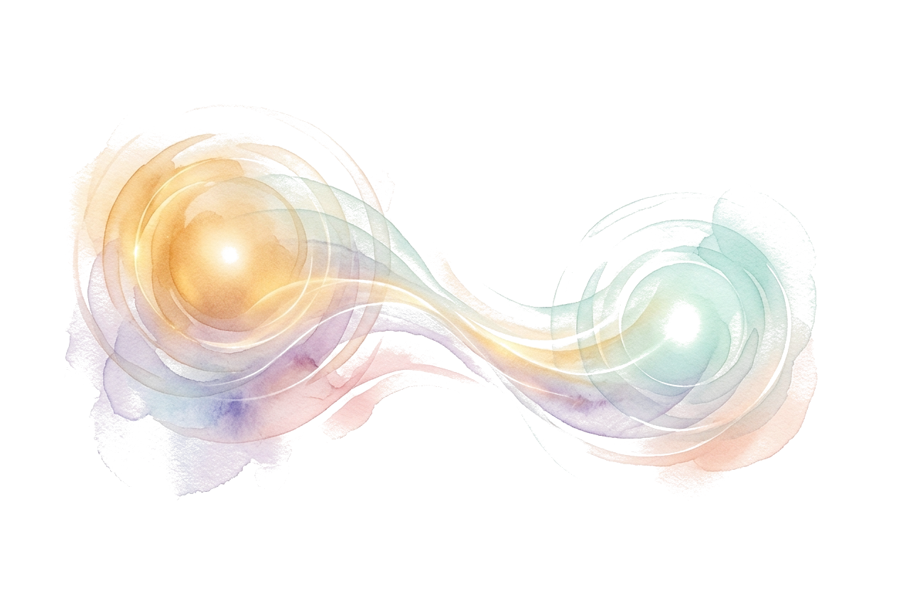
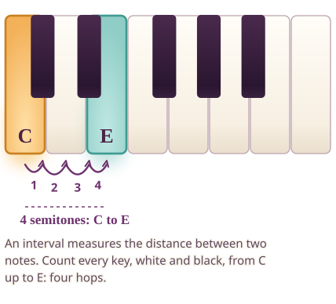
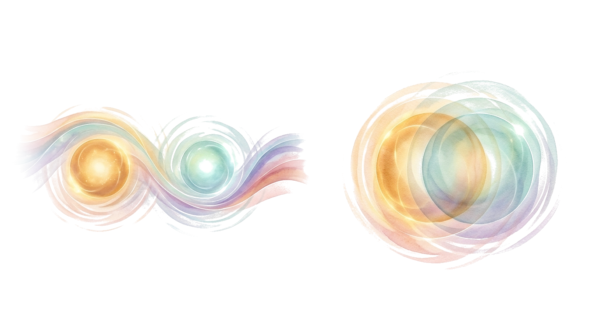
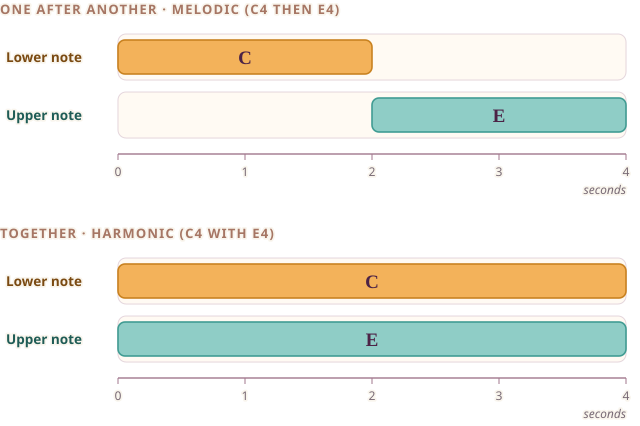
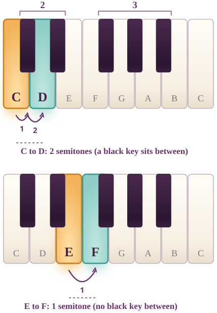
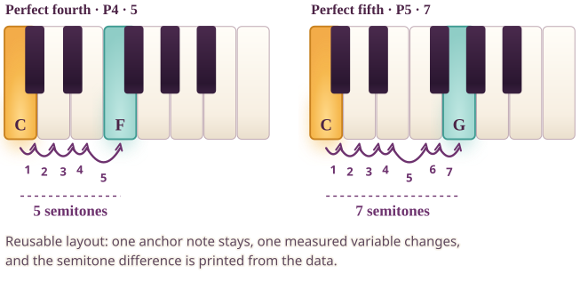

Ajourné · Interval Palette · M05 asset review (not live)
Systems
Shared illustrations: the landing hero, what an interval is, melodic versus harmonic, keyboard orientation, the family ruler, the shared-note web and the comparison pattern.
IPV-01 · SYSTEM · ART + NATIVE
Palette landing hero


How to read the picture. The painting is only an invitation: warm centre, then wider and wider fields. The exact ruler is the figure beneath: thirteen labelled landmarks from 0 to 12 semitones above C4.
On your own keyboard. Find the C nearest the middle of your keyboard. Play it, then play the next key up, then the one after. Count the keys you have moved: that is the interval growing.
Alt text of the exact figure
A ruler from 0 to 12 semitones above C4 with thirteen marked landmarks in order: P1, m2, M2, m3, M3, P4, A4 or d5, P5, m6, M6, m7, M7, P8. The ruler shows measured distance only.IPV-04 · SYSTEM · ART + NATIVE
What is an interval?


How to read the picture. Two soft presences with a stream between them stand for two notes and the distance between them. The keyboard under it measures one example exactly: C to E is four semitones.
On your own keyboard. Play C, then E, with your own hands. Now count the keys between them, black keys included, until you reach four.
Alt text of the exact figure
A keyboard from C4 to C5 with C4 and E4 highlighted and four numbered semitone hops between them: C to C-sharp, to D, to D-sharp, to E. The distance, four semitones, is the interval.IPV-05 · SYSTEM · ART + NATIVE
Melodic versus harmonic


How to read the picture. Left: the same two notes one after another along time. Right: the same two notes at once. The strips show C and E both ways, so you can see the pitch pair has not changed, only the timing.
On your own keyboard. Play C then E, slowly. Then press both together. Notice how the same two keys feel different in time.
Alt text of the exact figure
Two time strips for the same notes, C4 and E4. In the first strip C4 sounds during seconds 0 to 2 and then E4 during seconds 2 to 4, one after another. In the second both notes last the whole 4 seconds, together. The distance is four semitones in both.IPV-06 · SYSTEM · NATIVE + ART
Keyboard interval orientation

How to read the picture. Black keys come in groups of two and three. C to D has a black key between, so it is two semitones. E to F has none, so it is one. White neighbours are not always one semitone.
On your own keyboard. Find a group of two black keys; the white key just left of it is C. Play C to D, then E to F, and notice one has a black key between and the other does not.
Alt text of the exact figure
A keyboard from C4 to C5 showing black keys in groups of two then three. C to D spans two semitones because C-sharp sits between them. E to F spans only one semitone because there is no black key between E and F.IPV-07 · SYSTEM · ART + NATIVE
Interval family ruler
How to read the picture. Thirteen landmarks sit on one exact ruler from 0 to 12 semitones above C4, labelled with the standard abbreviations. Position is distance only.
On your own keyboard. Pick any landmark, find C4 on your keyboard, count that many keys up and play the result.
Alt text of the exact figure
A ruler from 0 to 12 semitones above C4 with thirteen marked landmarks in order: P1, m2, M2, m3, M3, P4, A4 or d5, P5, m6, M6, m7, M7, P8. The ruler shows measured distance only.IPV-08 · SYSTEM · ART + NATIVE
Shared-note relationship web


How to read the picture. The painting shows one shared anchor with different upper notes branching off. The exact figure beside it shows the idea with real keys: keep C, change the other note.
On your own keyboard. Hold C down quietly and move only your other finger between neighbouring keys. Notice that C is a fixed reference while the relationship changes.
Alt text of the exact figure
Two keyboards with the same two keys highlighted, C4 and the black key above D. First it is spelled E-flat: letters C, D, E make a third, so it is a minor third. Second it is spelled D-sharp: letters C, D make a second, so it is an augmented second. Both are 3 semitones.IPV-09 · SYSTEM · VARIANT (layout)
Comparison diptych layout


How to read the picture. A reusable pattern: one anchor stays, one note changes, and the semitone difference is printed from the data. This example compares a fourth and a fifth.
On your own keyboard. Play C with F, then C with G, and count the keys the upper note travelled.